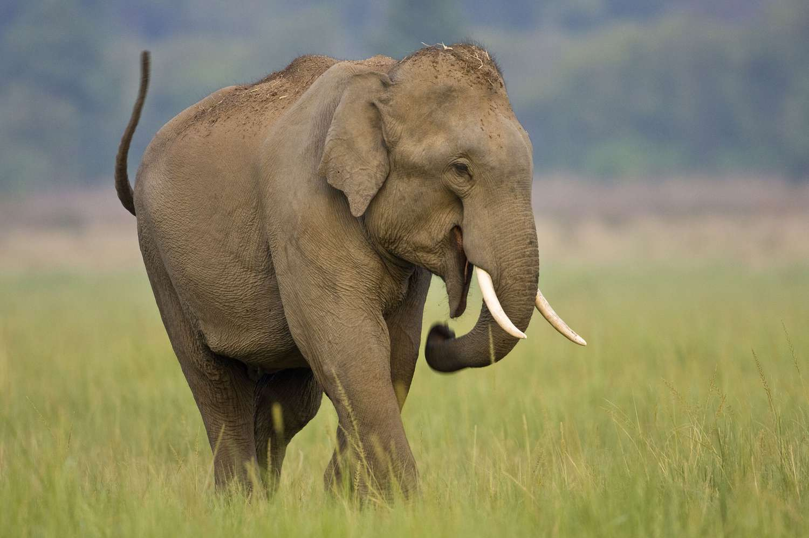
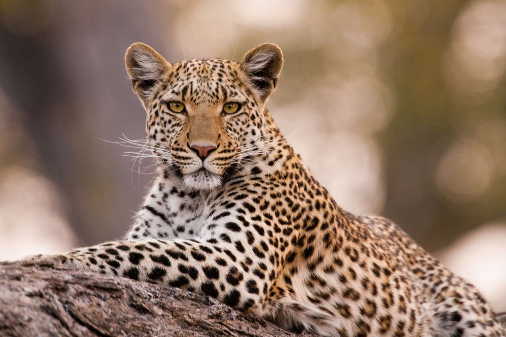
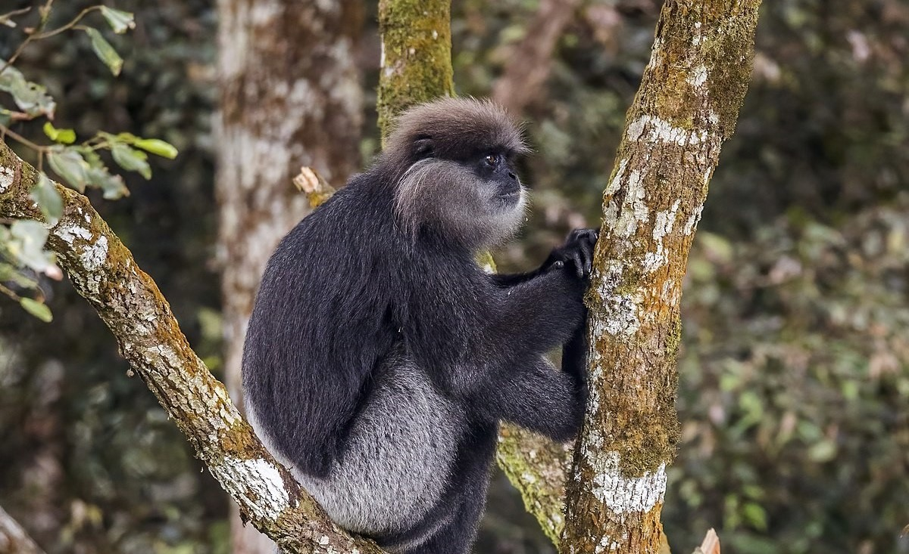

Sri Lanka, nestled in the Indian Ocean, is a haven for sectionerse and fascinating wildlife. From majestic elephants wandering through lush landscapes to the elusive leopards stealthily navigating the dense jungles, the island boasts a captivating array of creatures. Vibrant bird species, unique reptiles, and marine life further contribute to the country's rich biosectionersity.

Asian Elephant
Habitat: Asian Elephants are found in a variety of habitats ranging from dense forests to grasslands and marshes.
Behavior: These gentle giants are known for their social behavior and close-knit family units. They display high levels of intelligence.
Conservation Status: Asian Elephants face threats from habitat loss and human-wildlife conflict. Conservation efforts focus on protected areas and wildlife corridors.

Sri Lankan Leopard
Habitat: Sri Lankan Leopards primarily inhabit dense forests but can adapt to various environments, including grasslands and rocky areas.
Behavior: Known for their stealth and agility, Sri Lankan Leopards are solitary creatures. They are skilled climbers and swimmers.
Conservation Status: Considered endangered, the Sri Lankan Leopard faces threats from habitat fragmentation and poaching. Conservation initiatives focus on protecting their habitats.
Indian Peafowl
Habitat: Indian Peafowls, or Peacocks, are found in a variety of habitats, including forests, grasslands, and cultivated areas.
Behavior: Males are renowned for their vibrant plumage and elaborate courtship displays. Peafowls are social birds and often forage in groups.
Conservation Status: Indian Peafowls are not considered globally threatened. However, habitat loss and hunting can impact local populations. Conservation efforts involve protecting their natural habitats.

Purple-Faced Langur
Habitat: Purple-Faced Langurs are predominantly found in the dense rainforests of Sri Lanka, particularly in the central and southwestern regions.
Behavior: These langurs are arboreal and highly social, living in groups led by a dominant male. They are known for their distinct purple faces, especially in males.
Conservation Status: The Purple-Faced Langur faces threats from habitat destruction and fragmentation. Conservation efforts focus on protecting their natural habitats.
Sri Lankan Junglefowl
Habitat: The Sri Lankan Junglefowl is found in a variety of habitats, including forests and scrublands. It is the national bird of Sri Lanka.
Behavior: Males are known for their striking plumage with vibrant colors. They are ground-dwelling birds, and their calls are a common sound in Sri Lankan forests.
Conservation Status: The Sri Lankan Junglefowl is not globally threatened. Conservation efforts involve maintaining suitable habitats and preventing habitat loss.
Sri Lankan Giant Squirrel
Habitat: The Sri Lankan Giant Squirrel inhabits a range of forest types, from rainforests to dry zone forests. They are agile climbers and spend much of their time in trees.
Behavior: These squirrels are diurnal and primarily herbivorous, feeding on fruits, nuts, and leaves. Their distinctive appearance includes a tuft of fur on their ears.
Conservation Status: While not globally threatened, the Sri Lankan Giant Squirrel faces habitat loss. Conservation efforts aim to protect their forest habitats and maintain biosectionersity.